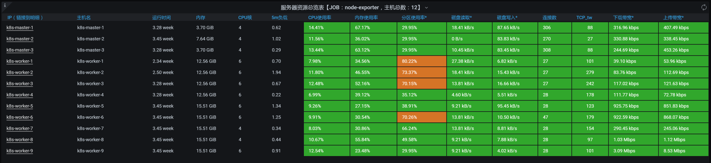

- 00 开篇词 打破四大认知局限，进阶高级性能工程师.md.html
- 01 性能工程：为什么很多性能测试人员无法对性能结果负责？.md.html
- 02 关键概念：性能指标和场景的确定.md.html
- 03 核心分析逻辑：所有的性能分析，靠这七步都能搞定.md.html
- 04 如何构建性能分析决策树和查找瓶颈证据链？.md.html
- 05 性能方案：你的方案是否还停留在形式上？.md.html
- 06 如何抽取出符合真实业务场景的业务模型？.md.html
- 07 性能场景的数据到底应该做成什么样子？.md.html
- 08 并发、在线和TPS到底是什么关系？.md.html
- 09 如何设计全局和定向监控策略？.md.html
- 10 设计基准场景需要注意哪些关键点？.md.html
- 11 打开首页之一：一个案例，带你搞懂基础硬件设施的性能问题.md.html
- 12 打开首页之二：如何平衡利用硬件资源？.md.html
- 13 用户登录：怎么判断线程中的Block原因？.md.html
- 14 用户信息查询：如何解决网络软中断瓶颈问题？.md.html
- 15 查询商品：资源不足有哪些性能表现？.md.html
- 16 商品加入购物车：SQL优化和压力工具中的参数分析.md.html
- 17 查询购物车：为什么铺底参数一定要符合真实业务特性？.md.html
- 18 购物车信息确定订单：为什么动态参数化逻辑非常重要？.md.html
- 19 生成订单信息之一：应用JDBC池优化和内存溢出分析.md.html
- 20 生成订单信息之二：业务逻辑复杂，怎么做性能优化？.md.html
- 21 支付前查询订单列表：如何分析优化一个固定的技术组件？.md.html
- 22 支付订单信息：如何高效解决for循环产生的内存溢出？.md.html
- 23 决定容量场景成败的关键因素有哪些？.md.html
- 24 容量场景之一：索引优化和Kubernetes资源分配不均衡怎么办？.md.html
- 25 容量场景之二：缓存对性能会有什么样的影响？.md.html
- 26 稳定性场景之一：怎样搞定业务积累量产生的瓶颈问题？.md.html
- 27 稳定性场景之二：怎样搞定磁盘不足产生的瓶颈问题？.md.html
- 28 如何确定异常场景的范围和设计逻辑？.md.html
- 29 异常场景：如何模拟不同组件层级的异常？.md.html
- 30 如何确定生产系统配置？.md.html
- 31 怎么写出有价值的性能报告？.md.html
- 我们这个课程的系统是怎么搭建起来的？.md.html
- 结束语 做真正的性能项目.md.html
- 捐赠
09 如何设计全局和定向监控策略？
你好，我是高楼。
纵观软件性能行业的发展历程，十几年前，当性能测试刚刚在国内出现的时候，我们只守着工具，不管是在培训还是在工作中，只要学会了性能测试工具，就可以横行市场。那个时候，会不会使用LoadRunner，就是会不会做性能的标准。
然而，性能测试行业发展到现在，我们仍然能看到在很多场合中，大家还是在讲性能测试理论和思维，还是在讲性能测试工具的使用和实现。虽然也有性能监控部分的数据说明，但大部分也都只是停留在数据的罗列上，描述一下CPU 90%、内存不足、IO 100M之类的现象。
至于为什么会是CPU 90%？如何定位到具体的原因？解决方案又是什么？大部分性能工程师都是不知道的，甚至连思路都说不上来。这就是当下行业的现状了。
前段时间，我看到一个微信群里展开了一场讨论。有一个人去面试性能职位，被问到“某一天夜里，生产上的数据库的CPU突然飙升，该怎么去定位问题原因”。群里议论纷纷，有人说是因为固定的批量执行计划；有人说要看监控数据，看慢SQL等等，总之就是一群人在猜来猜去。
最后，面试官直接给出答案：因为Redis被击穿，导致数据库压力大，所以CPU高。看到这个答案，当时就有人觉得这和题目中描述的现象并没有什么直接的逻辑关系。
通过这个事情，我们可以看到，性能监控数据不足带来的问题就是没有分析的证据链。而我一直在强调，从现象到结论要有完整的分析链路，只有这样才是真正的性能分析，否则就是在连蒙带猜做性能。
现在有很多企业（不管是互联网大厂，还是金融机构等）的监控都看似做得挺全面，但其实并没有监控层级的细化。而不做监控的细化，导致的问题就是，经常会出现需要分析某个数据时，只能重新运行场景去抓取数据，并且还要临时添加监控工具。
所以基于上述种种现状，今天这节课我要跟你讲一讲如何设计全局定向监控策略，我希望你能明白从全局到定向的思路，事先设计好监控策略的重要性。
在设计监控策略时，我们第一步是分析架构。通过分析架构，我们要确定有哪些需要监控的点。
分析架构
我们先列出这个课程所示例的系统中都有哪些机器。

在前面的第4讲里，我们已经画出了系统架构，如下所示：

从上面的信息中，我们要列出需要监控的组件，也就是下面的这张表格。请你注意，对于上面的各层实例，我们现在只配置了一个，但并不是说我们只需要一个，在后续的测试过程中，当需要增加实例时，我们再增加。
监控工具选型
基于上面的组件列表，我们接下来要选择相应的监控工具。有一点你要注意，这是我们选择的第一层监控工具，也就是全局监控工具。对于定向监控中需要的工具，我们现在还无法确定，因为定向监控工具取决于性能分析过程中有什么问题。
在我们通过全局监控计数器发现问题之后，想要定位问题的具体原因是什么，就需要分析更详细的监控数据。但是这一点，全局监控计数器无法做到，所以我们需要选择合适的定向监控工具，得到更细的监控数据，我称之为定向监控。
不难理解，全局监控和定向监控的区别就是，全局监控是第一层的监控，它可以将一个技术组件的各个模块的关键性能体现出来，比如说操作系统的CPU就是典型的全局监控计数器。
下面我们来看怎么选择全局监控工具。
- 全局监控策略和工具选型
我们说，全局监控是为了判断整个系统的瓶颈点在什么方向，但并不能给出具体的原因。基于这一点，我们在选择全局监控工具时，要注意几个关键点：
数据精准：这一点非常重要，因为对于性能计数器来说，数据的精准直接决定了下一步的步骤。
成本低：这里的成本包括费用和人工成本。不管是成型的收费产品、免费产品、自主研发产品，还是组合产品，费用都是容易计算的，我就不多啰嗦了。对于人工成本，我们直接拿员工的工资和时间计算就行。如果是做临时的项目，我建议最好选择比较流行、通用的监控工具。
范围大：也就是监控工具要足以覆盖全局监控计数器。在第4讲中，我们讲了怎么构建性能分析决策树，而监控工具要做的就是，把性能分析决策树列出的计数器都尽量覆盖全。如果工具能力实在有限，又没时间扩展，那就要在选择好工具之后，明确哪些计数器无法监控到。然后在性能分析的过程中，使用命令弥补工具上的不足。
历史数据可保存：在性能项目中，实时查看性能数据是必要的，而监控的历史数据可保存也至关重要。因为在场景执行结束后，我们做性能分析和性能报告时会使用到历史数据。
基于这几点，接下来我们就要选出对应的全局监控工具。
根据这个系统的架构，我们选择的工具要监控到这几个层面：第一层，物理主机；第二层，KVM虚拟机；第三层，Kubernetes套件；第四层，各种应用所需要的技术组件。

因此，对应的监控工具如下表所示。
以上工具都是免费、开源的，可以完全满足我们的监控需求，我们只要部署一下就行。对于其中的操作系统监控工具，我们在第4讲RESAR性能分析逻辑中就已经说明了它的局限性，你要是忘记了，可以再回顾一下。
在我们这个系统中，物理机和KVM都是完整的操作系统，所以我们直接用第4讲中的node_exporter就可以完全覆盖。但是，往上一层的Kubernetes，我们怎么才能全面监控呢？这里就涉及到Kubernetes的监控套件了。现在，我们来看一个Kubernetes全局监控套件，如下所示：
-

类似这样的模板有很多，我就不一一列举了。虽然各个工具展示的方式不同，但都能达到我们全局监控Kubernetes的目标。所以，我们只需要选择一个合适自己业务系统的Kubernetes监控套件就可以了。
其实，如何选择一个监控套件来实现各层的监控需求，是全局监控的一个难点。在全局监控中，我一直在强调一个词——“分层”。因为在我参与过的项目中，经常有人说：“我们的监控是全的。”但当我自己动手查看时，只看到操作系统级的数据，而其上运行的其他内容就没有了。
还有一个我亲身经历的例子。我在给一个金融机构做培训时，他们说线上有问题，让我帮着分析一下。同时，他们还胸有成竹地跟我说：“我们的监控数据是很全的，只是不知道问题在哪里。”
可是，我拿过数据一看，发现没有Java线程级的数据，他们的监控平台也不支持细化到线程级。而从系统的数据来看，这恰巧又是一个线程的问题。于是，他们就只有重新采集数据。等数据再拿过来，问题在哪里一目了然。
这就是全局监控数据缺失，进而导致分析链路断裂的典型例子。所以，全局监控的完整性是性能分析非常重要的部分。
- 定向监控策略和工具选型
完成了全局监控之后，性能场景就可以运行起来了。但是当我们遇到问题时，我们在全局监控数据中就只能看到第一层的计数器，比如说CPU高、内存不足、IO高、网络带宽大等信息。从这些信息中，我们无法知道做什么样的优化才能使CPU降下来、内存使用变少、IO变低、网络变小。
所以，这时候我们必须要做定向监控，定向监控就是为了寻找更细节的证据。在RESAR性能工程中，我之所以把数据分为全局和定向，是因为性能分析是有逻辑链路的。如果不做区分，只是一股脑地全看，会让你有一种数据很多，但不知道哪个是关键数据的感觉。
请你注意，在我的分析理念中，全局和定向是必须分开的。因为对于全局监控数据，我们会一直采集并保存一段时间，这样对系统整体的性能影响并不大。可是，如果我们对定向数据也一直采集的话，就会影响系统整体的性能，比如说线程栈的数据采集、对象的内存消耗采集等等，这些操作其实对性能都有影响，不管工具厂商吹嘘得有多完美，我们在实践中已经有足够的数据可以证明这一点。
不过，当前市场上的很多监控工具是不区分全局监控和定向监控的。所以，在我们前面罗列的全局监控工具中，你也可以看到定向监控需要的数据。比如说，我们在用JvisualVM监控Java的时候，不仅能看到CPU、JVM、Class、Thread等全局信息，也能看到栈、方法、对象等定向信息。
对于Java微服务应用，我们用表格中列出的工具，其实就可以看到比较细节的数据了。像方法级、对象级这些，Spring Boot Admin、JvisualVM和其他的一些JDK自带的监控工具等都可以做到。如果我们在使用中觉得哪里不足，还可以再考虑其他的定向监控工具。
而有了对Spring Cloud微服务的监控工具之后，在提供服务的过程中，我们需要看到的是业务链路，这时上面的对单个微服务进行监控的工具就做不到了。
所以这里，我用APM工具SkyWalking来链路的监控。
在SkyWalking中，我们不仅能看到链路图，也可以用它看到更细化的数据。这张图就是SkyWalking中的链路图，我把它定义为全局监控。

下面这张图是用SkyWalking工具看到的更细化的数据，我把这样的数据定义为定向监控数据。

这个图展示的是定向分析的一个中间环节。我们从图中可以看到一个请求对应的每一段的耗时，比如说，一个接口调用另一个接口、JDBC、Redis等后续组件。当我们发现哪一段耗时比较长的时候，就可以到耗时长的那个组件上，根据定向监控的数据接着往下分析了。
通过上述内容，我们知道了在定向监控时需要哪些数据。所以在我们分析完系统架构之后，也要对定向监控工具进行选型，把需要的工具都准备好，以免出现有问题时无工具可用的情况。不过，定向监控只是先准备好，不用一开始就使用，这一点你要切记。
在这里，我列出了在我们这个示例系统中可能会用到的定向分析工具，我主要考虑是覆盖系统级、代码级、数据库级和缓存级。
这样一来，我们在后续的性能分析工作中，就不用再临时抓瞎到处找工具了。
总结
在我的逻辑中，全局和定向必须要分开，这一点我在前面跟你强调过，不分开就会导致资源浪费，并且我们需要的数据还有可能是缺失的。
另外，请你注意，监控的全面性直接取决于项目级性能分析决策树的构建，也就是说用什么工具并不是关键，关键在于这些监控工具有没有把性能分析决策树的树叶都覆盖全。
在选择监控工具时，我们主要考虑的是成本、范围、层次、使用的延续性等因素。只有合理的监控策略和监控工具，才能让性能分析决策树真地落地，才能让性能瓶颈证据链的查找具有可能性。
最后，我还想提醒你一点，请不要认为监控到技术组件这个层级就足够了，把对应技术组件的模块和模块对应的计数器都覆盖到才是重要的。因为在分析瓶颈的过程中，我们要找到计数器之间的关联性，如果有一个计数器缺失，就会导致分析中断。
课后作业
这就是今天的全部内容，我给你留了两道题以巩固今日所学，请你思考一下：
- 如何判断自己选择的性能监控工具，有没有覆盖全性能分析决策树？
- 为什么不建议选择更多的定向监控分析工具？
记得在留言区和我讨论、交流你的想法，每一次思考都会让你更进一步。
如果这节课让你有所收获，也欢迎你分享给你的朋友，共同学习进步。我们下一讲再见！
© 2019 - 2023 Liangliang Lee. Powered by gin and hexo-theme-book.